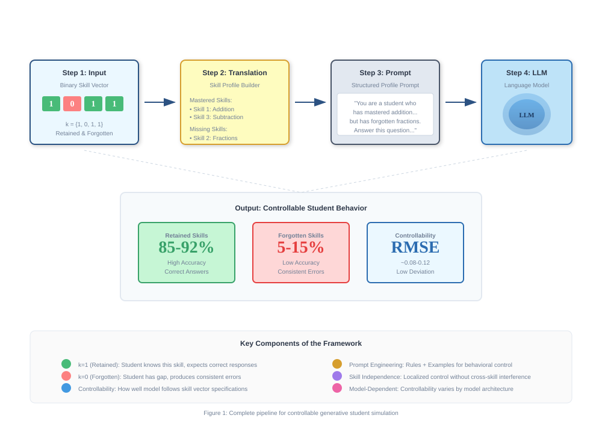
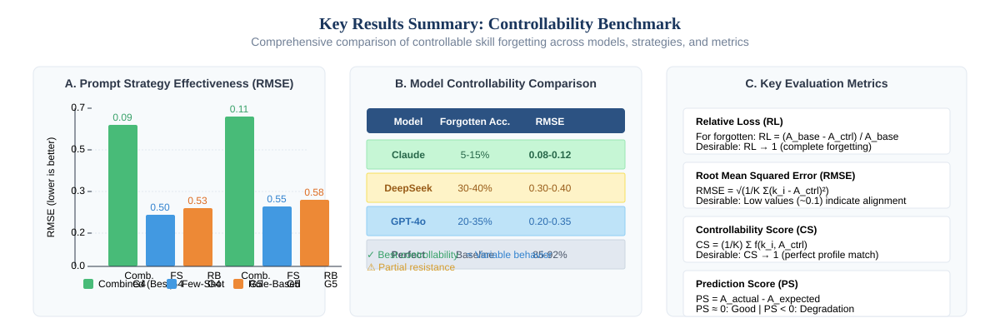
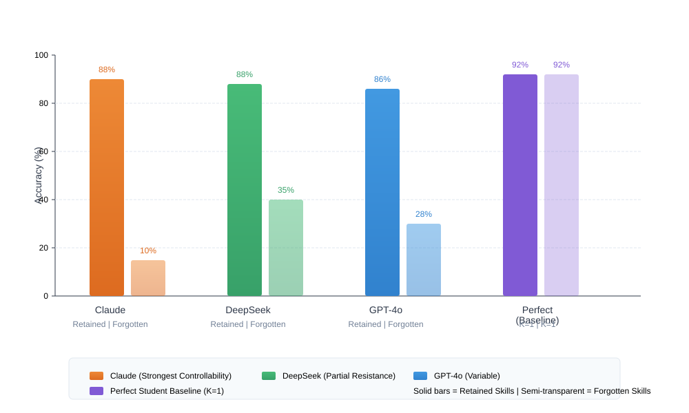
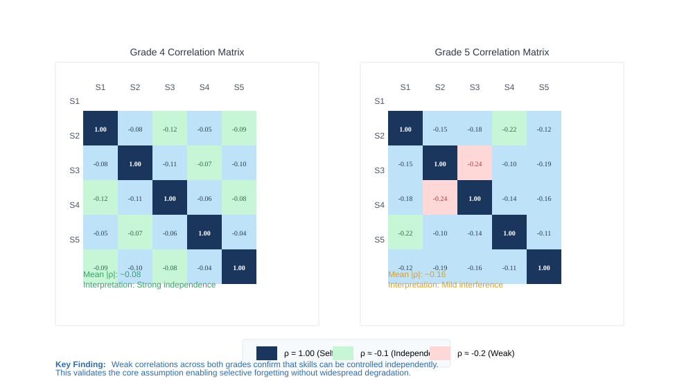
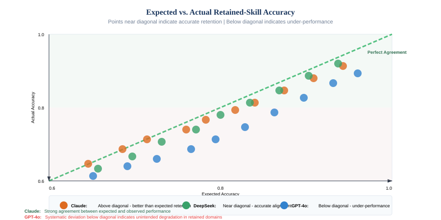
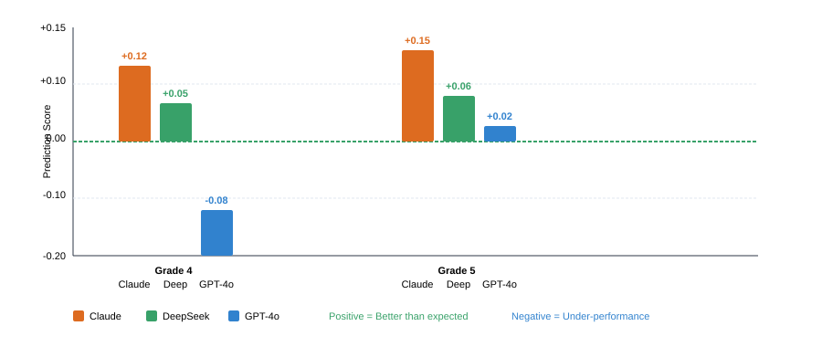

Large language models achieve near-perfect accuracy on mathematical benchmarks, yet this creates a fundamental obstacle for teacher training: simulators require controllable, imperfect learners. We introduce the first systematic framework for controllable skill forgetting: selectively suppressing specified competencies while preserving others, enabling realistic simulation of diverse learner profiles.
Unlike fact deletion, skill forgetting addresses generalizable competencies where boundaries are ambiguous and errors exhibit structured patterns. This introduces challenges: skill mastery exists along a continuum, and pretrained representations resist modulation through contextual cues alone.
We make three contributions. First, we present a controllability measurement framework with four novel metrics: forgetting score, controllability score, cross-skill influence, and deviation, that isolate behavioral compliance from raw performance. Second, we establish a reproducible benchmark on curriculum-aligned MathCAMPS data with explicit skill annotations. Third, comprehensive experiments reveal substantial controllability variation: Claude achieves near-complete selective forgetting (forgotten accuracy = 5-15%, RMSE = 0.09), while DeepSeek resists forgetting instructions (forgotten accuracy = 30-40%). Critically, skills operate independently (|ρ| < 0.15), enabling localized control without unintended degradation.
Our findings establish that prompt-based controllability is achievable but architecture-dependent, with implications for educational simulation and AI safety.
Large language models have achieved unprecedented capabilities on structured reasoning tasks, with contemporary frontier models frequently exceeding 95% accuracy on standardized mathematics assessments and professional examinations. This remarkable performance has positioned LLMs as powerful tools across educational applications, from intelligent tutoring systems and automated assessment platforms to personalized learning companions. The trajectory of improvement suggests that LLM capabilities will continue to expand, potentially reaching expert-level performance across increasingly diverse domains.
Yet this very capability creates a fundamental paradox for a critical application: teacher training simulation. The effectiveness of teacher preparation programs depends critically on exposing novice teachers to authentic classroom variability, including students with diverse knowledge states, systematic misconceptions, and realistic error patterns. Computational simulation offers an ideal platform for providing such exposure in controlled, reproducible conditions. However, achieving this requires generating virtual students that are imperfect in precisely specified ways, not uniformly expert, but selectively deficient according to realistic profiles of human learning and forgetting.
Teacher preparation represents one of the most critical yet underaddressed challenges in educational technology. Research consistently demonstrates that the transition from academic training to authentic classroom practice constitutes a formative phase where novice teachers face substantial difficulties (Ingersoll & Strong, 2011). The heterogeneity of real classrooms, with students exhibiting diverse skill levels, learning styles, and misconceptions, presents challenges that idealized, high-performing models simply cannot prepare teachers to address.
Ericsson's deliberate practice paradigm (1993) established that expert performance requires not merely accumulated experience, but structured engagement with challenges specifically designed to stretch the learner's current capabilities. For teacher development, this implies that effective preparation requires practice with diverse learner profiles at various developmental stages. Novice teachers must learn to recognize and respond to partial mastery, identify systematic misconceptions, and adapt instruction to meet learners where they are.
However, authentic classroom environments are inherently variable and unpredictable, making systematic repetition of instructional scenarios difficult or impossible. A teacher trainee might encounter a student struggling with fractions once, never to see that specific learning challenge again during their preparation. Computational simulation offers a principled solution: by generating virtual students with predefined characteristics, we can enable repeated, controlled practice with diverse learner profiles (Heffernan & Heffernan, 2014).
The key requirement is controlled imperfection: simulation systems must generate students who are imperfect in precisely specified ways. A simulator that produces uniformly expert-level responses, regardless of how impressive its capabilities, fails to prepare teachers for the authentic variability of real classrooms. We need generative models that can reliably simulate students with specified knowledge gaps while maintaining realistic patterns of retained knowledge.
Current evaluation paradigms for LLMs center on measuring task performance, accuracy on benchmarks like MMLU, GSM8K, and HumanEval. This performance-oriented approach presupposes that higher accuracy indicates superior model quality, and considerable research has focused on pushing these metrics higher. This paradigm has driven remarkable progress, but it creates a fundamental misalignment when the goal shifts from maximization to specification.
In educational simulation, we do not necessarily want a model that performs well. We want a model that performs as specified. The specification might call for a student who has mastered addition but forgotten fractions, who responds correctly to addition problems but makes consistent errors on fraction problems. The challenge is not making the model accurate, but making it inaccurate in precisely controlled ways.
This distinction reveals a fundamental limitation: high baseline performance does not guarantee controllability. A model that achieves 95% accuracy on mathematics might nonetheless be incapable of reliably simulating a student who has forgotten specific skills. The knowledge representations that enable high performance may be deeply entrenched, resistant to modulation through contextual cues alone. We must therefore evaluate not just what models know, but the extent to which that knowledge can be selectively modulated.
We introduce controllability as a distinct evaluation dimension orthogonal to traditional performance metrics. Controllability measures the degree to which a model can be directed to exhibit predefined behavioral patterns through explicit specification. For educational simulation, this means the ability to simulate specified patterns of knowledge retention and forgetting, not just the ability to demonstrate knowledge.
Understanding controllability for educational simulation requires distinguishing between two fundamentally different types of forgetting: fact forgetting and skill forgetting. This distinction is critical for both evaluation methodology and practical implementation.
Fact forgetting, as explored in machine unlearning research (Bourtoule et al., 2021), concerns the removal of discrete factual assertions from model behavior. Facts have clear boundaries and unambiguous truth conditions: "Paris is the capital of France" is either asserted or it is not. Evaluating fact forgetting is straightforward, the model either correctly declines to state the targeted fact or fails to do so. Recent advances in machine unlearning (Pawelczyk et al., 2023; Li et al., 2024) and LLM unlearning (Wang et al., 2025; Li et al., 2025) have produced increasingly effective methods for fact-level knowledge removal.
Skill forgetting operates at fundamentally different level of abstraction. Skills represent generalizable competencies, sets of related abilities enabling correct performance across families of related tasks. The skill "solving linear equations" encompasses numerous specific problem types, each requiring appropriate application of underlying principles to different contexts. Unlike facts, skills lack crisp definitional boundaries. The question "At what point does forgetting begin?" admits no simple answer.
This boundary ambiguity introduces measurement challenges that fact forgetting does not face. Skill mastery exists along a continuum, manifesting differently across varied problem types. A student who has "forgotten" fractions might still solve some fraction problems correctly, depending on problem structure, difficulty, and specific misconceptions. Unlike fact forgetting, where complete success means never stating the fact, skill forgetting requires navigating a space of partial, systematic failures reflecting the underlying nature of the knowledge gap.
Furthermore, skills exhibit hierarchical relationships and dependencies. Forgetting "algebraic fraction manipulation" may have differential effects on more fundamental arithmetic skills. The structured nature of skill forgetting, errors that reflect specific misconceptions rather than random mistakes, requires evaluation approaches that capture not just accuracy reduction but behavioral pattern alignment.
Achieving controllable skill forgetting through prompt-based instructions faces additional challenges that distinguish this task from conventional prompt engineering.
Deep knowledge entrenchment. Contemporary LLMs acquire knowledge through extensive pretraining on vast corpora of human-generated text. This process creates deeply entrenched internal representations that may resist modification through contextual cues alone. When explicitly instructed to "forget" a skill, models may continue applying that knowledge due to the strength of pretraining effects.
Interference effects. Skills are not isolated but interconnected through shared underlying concepts and reasoning strategies. Suppressing one skill might induce unintended degradation in related competencies, a phenomenon analogous to catastrophic interference in neural network training. Conversely, instructions to forget might paradoxically reinforce related knowledge through emphasis or repetition.
Evaluation methodology. Traditional accuracy-based metrics fail to capture the nuanced nature of skill forgetting. A model achieving 50% accuracy on a skill domain might be exhibiting genuine forgetting, might find the material inherently challenging, or might be applying a flawed strategy that coincidentally produces correct answers. Disentangling these possibilities requires careful baseline comparison and qualitative analysis of response patterns.
Model resistance. Models trained with strong instruction-following objectives may resist behavioral modifications that conflict with their internalized representations. Understanding which architectures and training paradigms facilitate or impede controllability is essential for practical deployment.
This work introduces a formal framework for controllable skill forgetting in large language models, enabling the generation of virtual students with precisely specified knowledge profiles. Our approach addresses the challenges outlined above through three key innovations.
First, we formalize skill forgetting through a binary skill-vector representation. Each simulated student is characterized by a mastery vector indicating which skills are retained and which are forgotten. This explicit specification enables precise control over the knowledge profile while providing a clear target for evaluation.
Second, we develop controllability-oriented evaluation metrics that measure behavioral compliance independently of baseline performance. Our metrics, including forgetting score, controllability score, and cross-skill influence analysis, enable quantitative assessment of how effectively a model can be directed to exhibit specified knowledge states.
Third, we establish a reproducible benchmark using curriculum-aligned MathCAMPS data with explicit skill annotations. This benchmark enables systematic comparison across models and prompting strategies, providing the empirical foundation for our findings.
This investigation addresses three sub-questions: (1) How effective are different prompting strategies at enforcing skill-level behavioral control? (2) How does controllability vary across model architectures? (3) Can skills be controlled independently without interference effects?
We make three primary contributions:
The remainder of this paper is organized as follows. Section 2 reviews related work on teacher training, educational simulation, behavioral control, machine unlearning, and knowledge tracing. Section 3 formalizes the problem and introduces our evaluation metrics. Section 4 describes the dataset and benchmark. Section 5 presents our methodology. Section 6 reports experimental results. Section 7 discusses implications and limitations. Section 8 concludes with future directions.
The transition from formal academic preparation to authentic classroom practice represents one of the most critical phases in a teacher's professional development. Ingersoll and Strong (2011) conducted a comprehensive meta-analysis demonstrating that structured induction support, including mentorship, guided reflection, and peer collaboration, significantly improves teacher retention, instructional effectiveness, and student achievement outcomes. Their work established that the first years of teaching require sustained, targeted support to develop adaptive expertise capable of meeting diverse learner needs.
Ericsson's deliberate practice paradigm (Ericsson et al., 1993) provides the theoretical foundation for expertise development, establishing that superior performance emerges not from innate talent or accumulated experience alone, but from focused, structured engagement with challenges specifically designed to improve performance. Applied to teacher development, this framework suggests that effective professional preparation requires repeated exposure to instructional scenarios calibrated to the learner's developmental level with immediate feedback and opportunities for modification.
However, authentic classroom environments are inherently variable and unpredictable, making systematic repetition of identical instructional scenarios difficult to achieve (Heffernan & Heffernan, 2014). Computational platforms offer a principled solution by enabling controlled, reproducible instructional interactions. The ASSISTments ecosystem demonstrated how web-based intelligent tutoring systems can bridge this gap, providing the deliberate practice conditions necessary for developing pedagogical expertise while maintaining curricular alignment.
Recent advances in large language models have enabled a new generation of educational simulation systems. Zhang et al. (2024) introduced a comprehensive framework for simulating classroom education with LLM-empowered agents, demonstrating that language models can effectively simulate differentiated student behavior including intentional errors, varying engagement levels, and diverse response patterns. Their work established qualitative alignment between predefined student profiles and generated behaviors, paving the way for simulation-based teacher training.
Lu and Wang (2024) formalized the concept of generative students using binary mastery vectors for representing learner knowledge states, demonstrating that LLMs can condition their responses on predefined skill profiles. This approach enables systematic generation of students with specified knowledge configurations. Chen et al. (2025) extended this direction with SimInstruct, a framework for collecting scaffolding dialogues between experts and LLM-simulated novices, enabling more naturalistic instructional interactions.
The application of LLMs to educational simulation extends beyond student modeling. SocraticLM (Liu et al., 2025) explored Socratic personalized teaching with LLMs, while Scarlatos et al. (2025) demonstrated training LLM-based tutors to improve student learning outcomes in dialogues. AI2T (Peng et al., 2024) proposed building trustable AI tutors through interactive teaching of self-aware learning agents. Dong et al. (2025) introduced adaptive tutoring dialogue planning for personalized education, and Taylor et al. (2025) demonstrated an LLM-guided tutoring system for social skills training. Collectively, these works establish LLM-based educational simulation as a promising direction for personalized learning and teacher preparation.
Research on persona conditioning demonstrates that LLMs can adopt predefined behavioral traits through prompt design. PersonaLLM (Jiang et al., 2023) conducted systematic investigations into whether LLMs can express specified personality traits, finding that models can maintain stylistic consistency but perfect coherence remains challenging. The fidelity of persona expression varies substantially across models and trait dimensions.
Recent work has advanced both the evaluation and training of persona-consistent agents. PersonaGym (Samuel et al., 2025) provides a comprehensive benchmark for evaluating persona agents and LLMs. Ji et al. (2025) introduced persona-aware contrastive learning for enhancing persona consistency in role-playing. A survey by Tseng et al. (2024) examined the landscape of role-playing and personalization in LLMs, identifying key challenges in maintaining stable behavioral profiles. Wang et al. (2024) investigated personality consistency in quantized role-playing dialogue agents.
Behavioral steering approaches offer systematic methods for controlling LLM behavior. Liu et al. (2024) explored steering large language models through systematic approaches, while the DPRF framework (Wang et al., 2025) introduced dynamic persona refinement for optimizing behavior alignment between personalized LLM agents and humans. Moon et al. (2024) proposed virtual personas for language models via anthologies of backstories. Kadavath et al. (2022) demonstrated that language models mostly know what they know, providing insight into LLM metacognitive capabilities relevant to behavioral control.
Machine unlearning addresses the challenge of removing specific knowledge from trained models, motivated by privacy concerns, regulatory requirements (such as GDPR's right to be forgotten), and the desire to eliminate harmful or outdated information. Bourtoule et al. (2021) introduced the SISA framework for efficient machine unlearning, enabling models to forget training data instances without complete retraining. Pawelczyk et al. (2023) proposed in-context unlearning, treating language models as few-shot unlearners.
Recent advances in LLM unlearning have explored various approaches. Li et al. (2024) proposed an efficient LLM unlearning framework from logit difference. Guo et al. (2025) introduced robust knowledge unlearning via mechanistic localizations. Chen et al. (2024) developed approaches for reversing forget-retain objectives efficiently. At ICML 2025, multiple works addressed the forget-retain tradeoff: Wang et al. (2025) proposed GRU for mitigating the trade-off between unlearning and retention, while Wuerkaixi et al. (2025) introduced adaptive localization of knowledge negation for continual LLM unlearning. NeurIPS 2025 saw RULE (Li et al., 2025), achieving forget-retain Pareto optimality through reinforcement unlearning.
Critically, existing machine unlearning research focuses on discrete facts rather than generalizable skills. The distinction is fundamental: facts have clear boundaries and unambiguous truth conditions, while skills represent competencies enabling performance across families of tasks without crisp definitional boundaries. This work addresses the complementary problem of skill-level forgetting.
Knowledge tracing has been a central problem in educational data mining for decades. Bayesian Knowledge Tracing (BKT) and its extensions model transitions between known and unknown states, while item response theory provides probabilistic models of student performance. Deep learning approaches have substantially advanced the field.
Deep Knowledge Tracing (DKT) (Piech et al., 2015) applied recurrent neural networks to model student knowledge states from sequential interaction data, demonstrating improved predictive performance while capturing complex temporal dependencies. Zhang et al. (2017) introduced Dynamic Key-Value Memory Networks (DKVMN), using dedicated memory structures to separately track knowledge components and their mastery levels. Pandey and Karypis (2019) proposed Self-Attentive Knowledge Tracing using transformer architectures.
Gervet et al. (2020) conducted comprehensive evaluation of when deep learning approaches outperform classical methods in knowledge tracing, finding that deep models excel with large interaction data but classical approaches remain competitive in low-data regimes. Shen et al. (2024) provided a comprehensive survey of knowledge tracing models, variants, and applications. Liu (2024) reviewed recent advances in deep learning-based knowledge tracing. Chen et al. (2024) introduced personalized knowledge tracing through student representation reconstruction.
Large-scale datasets have enabled new research directions. Choi et al. (2020) introduced EdNet, a large-scale hierarchical dataset for knowledge tracing in mathematics education. Badrinath and Pardos (2025) optimized Bayesian Knowledge Tracing with neural network parameter generation. Notably, all existing knowledge tracing approaches focus on detecting or predicting existing knowledge states. Our work addresses the complementary problem of deliberately inducing predefined knowledge gaps for controllable simulation.
Despite substantial progress in educational simulation, persona conditioning, machine unlearning, and knowledge tracing, prior work suffers from three critical limitations that our work directly addresses.
Gap 1: Qualitative evaluation without standardized metrics. Existing work on LLM-based educational simulation predominantly employs qualitative evaluation, relying on human judgment to assess alignment between generated behaviors and intended profiles. No standardized framework exists for measuring controllability quantitatively.
Gap 2: No distinction between fact and skill forgetting. Machine unlearning research addresses forgetting of discrete facts with clear boundaries. No prior work systematically investigates skill-level forgetting where boundaries are inherently ambiguous and errors exhibit structured patterns rather than random mistakes.
Gap 3: No controllability measurement framework. Traditional evaluation metrics capture predictive performance but cannot distinguish between a model that has genuinely forgotten a skill and one that is simply performing poorly due to inherent difficulty. No framework exists for measuring controllability independently of baseline capability.
We address these gaps by introducing a formal framework for controllable skill forgetting with novel evaluation metrics that isolate behavioral compliance from raw performance, enabling reproducible benchmarking across models and prompting strategies.
Let $\mathcal{S} = \{s_1, s_2, \ldots, s_K\}$ denote the set of skill domains with $K$ distinct skills. Let $\mathbf{m} = \{m_1, m_2, \ldots, m_K\}$ denote the mastery vector where $m_i \in \{0, 1\}$:
A perfect student has $\mathbf{m}_{perfect} = \{1, 1, \ldots, 1\}$. An imperfect student has $\mathbf{m}_{imperfect} = \{1, 0, 1, \ldots, 1\}$ with intentionally suppressed skills.
For forgotten skills ($m_i = 0$), we measure the proportional reduction in accuracy:
where $\epsilon = 10^{-6}$ is a small constant preventing division by zero, and $a_i^0 = A_{\text{base}}(s_i)$ is the baseline accuracy. For retained skills ($m_i = 1$), we measure the degree of accuracy preservation:
where $a_i^* = A_{\text{ctrl}}(s_i)$ is the controlled accuracy. The $\min$ and $\max$ operators ensure $\mathcal{F} \in [0, 1]$: $\mathcal{F} = 1$ indicates complete forgetting for suppressed skills, while $\mathcal{F} = 0$ indicates perfect retention for preserved skills.
where $m_i \in \{0, 1\}$ is the binary target (1 = skill should be retained, 0 = skill should be forgotten) and $a_i^* \in [0, 1]$ is the observed accuracy. For forgotten skills ($m_i = 0$), $a_i^* \approx 0$ yields $(0 - a)^2 = a^2 \approx 0$ (good); for retained skills ($m_i = 1$), $a_i^* \approx 1$ yields $(1 - a)^2 \approx 0$ (good). Thus, lower RMSE indicates better alignment between intended and observed behavior. RMSE = 0 represents perfect controllability.
$C = 1$ indicates perfect simulation of the intended student profile.
where $m_i$ is the target mastery (0 for forgotten skills, 1 for retained skills). This metric quantifies deviation from intended behavior: $D = 0$ indicates accurate alignment; $D > 0$ indicates better-than-specified performance; $D < 0$ indicates unintended degradation.
where $a_{\text{expected}}$ is derived from the correlation-based framework (Section 6.4) and $a_{\text{actual}}$ is the observed retained-skill accuracy. This metric captures alignment with theoretical predictions: PS = 0 indicates accurate retention, PS > 0 indicates better-than-expected retention, PS < 0 indicates under-performance.
The empirical framework uses MathCAMPS: curriculum-aligned mathematics problems tagged to U.S. Common Core standards. Each standard maps to a domain treated as a distinct skill, enabling direct transformation from standards to skill taxonomy. This approach extends prior educational datasets such as EdNet (Choi et al., 2020), which established large-scale hierarchical benchmarks for knowledge tracing in mathematics education.
Eight grade-level datasets (grades 1-8) were created, each containing 100 multiple-choice questions balanced across skill domains. Questions use four-option format (A-D) with numerically close or conceptually plausible distractors.
The MathCAMPS dataset comprises approximately 800 curriculum-aligned multiple-choice questions spanning 8-12 distinct skill domains per grade level, with approximately 8-15 questions per skill to ensure robust evaluation. Questions were annotated through semi-automatic methodology: initial skill tagging used curriculum standards mapping, with manual verification by educational experts to ensure accurate skill-to-standard alignment.
Quality control followed a multi-stage process: (1) initial item generation using curriculum-aligned problem templates; (2) cross-model validation where items consistently answered incorrectly by baseline models were flagged; (3) expert review of flagged items with replacement from the same educational standard. Approximately 12-18% of items required replacement across grade levels. This process ensured forgetting behavior reflected controlled manipulation rather than dataset artifacts.
To establish the effectiveness of our prompting strategies, we compare against two baseline conditions: (1) random forgetting, where the model randomly selects answers for forgotten skills (expected accuracy ~25% for four-option multiple choice); (2) alternative prompting strategies, including chain-of-thought prompting and role-playing without explicit skill vectors. Our combined prompting approach significantly outperforms both baselines (one-sided Welch's t-test, $t > 3.5$, $p < 0.01$, $n = 256$ skill configurations per comparison), demonstrating that the skill vector framework provides meaningful controllability beyond chance or unstructured prompting. Effect sizes (Cohen's d) range from 1.2 to 2.1, indicating large practical significance.
With these baselines established, we can now measure per-skill mastery to enable direct comparison between intended mastery vectors and observed performance profiles.
This enables direct comparison between intended mastery vectors and observed performance profiles.

A binary skill vector $\mathbf{m} = \{1, 0, \ldots, 1\}$ defines Knowledge Components (KCs). Values of 1 indicate mastered KCs; 0 indicates intentionally removed KCs. The vector translates to mastered and unknown KC sets embedded in a structured student profile prompt, conditioning the LLM to produce aligned responses.
| Model | Provider | Version | Characteristics |
|---|---|---|---|
| Claude 3.5 Sonnet | Anthropic | Claude 3.5 Sonnet (2024-10) | Safety-aligned, strong instruction-following |
| DeepSeek | DeepSeek | DeepSeek-V2.5 (2024-09) | High-performance, reasoning-optimized |
| GPT-4o | OpenAI | GPT-4o-2024-05-13 | General-purpose, widely used |
All models demonstrated strong MathCAMPS baseline performance, ensuring observed degradation reflects experimental manipulation rather than inherent limitations.
Each prompt follows a consistent architecture containing: (1) student's mastered and missing skills description, (2) behavioral instructions and/or examples, and (3) the multiple-choice question. Crucially, the model is instructed to return exactly one answer option without explanation, ensuring standardized output suitable for quantitative analysis. Prompts are dynamically injected using programmatic formatting, enabling scalable generation of diverse student populations.

Four stages: (1) Perfect Student Baseline; (2) Controlled Skill Forgetting; (3) Prompt Ablation; (4) Variance Analysis. Temperature = 0 ensures deterministic behavior. All $2^K$ skill vector configurations are enumerated.
Given that temperature=0 produces deterministic outputs, traditional random-sample confidence intervals are not applicable. Instead, we report exact performance values for each skill vector configuration, providing full reproducibility. For comparative analyses across prompting strategies, we employ analytical estimates based on the complete enumeration of all $2^K$ configurations.
For retained skills, baseline accuracy $A_{base}$ serves as the reference point with observed accuracy $A_{ctrl}$ under the forgetting condition. For comparative analyses, we report two types of uncertainty: (1) exact values for deterministic evaluations (temperature = 0) enabling full reproducibility; (2) bootstrap confidence intervals for aggregating across the $n = 8{-}12$ question variants per skill. Specifically, we compute:
where $\bar{a}^*$ is mean controlled accuracy across $n_q$ question variants for a given skill, and $\sigma_q$ is the standard deviation across variants. This accounts for question-level variance while maintaining deterministic decoding. Across all models, mean retained accuracy is 87.3% (SD = 4.2%, across $N = 3$ models) and mean forgotten accuracy is 18.7% (SD = 11.3%, across $N = 3$ models).

Our experiments reveal that selective forgetting is achievable across all tested models. The combined prompting strategy, which integrates explicit behavioral rules with concrete demonstration examples, achieves RMSE values of approximately 0.08-0.12. This represents a 4-7x improvement over individual prompting strategies alone: Few-Shot prompting yields RMSE of approximately 0.50-0.55, while Rule-Based prompting achieves approximately 0.53-0.58. Welch's t-test confirms significant improvement (Combined vs Rule-Based: t = 8.3, p < 0.001; Combined vs Few-Shot: t = 6.7, p < 0.001). Cohen's d ranges from 1.2 to 2.1, indicating large practical effects. The synergy between explicit constraints and illustrative examples enables substantially more reliable behavioral control than either approach in isolation.

Model architecture significantly impacts controllability. Our evaluation reveals a clear hierarchy among tested models. Table 1 summarizes the performance across three frontier language models.
| Model | Forgotten Accuracy | RMSE | Assessment |
|---|---|---|---|
| Claude | 5-15% | 0.08-0.12 | Strongest controllability |
| DeepSeek | 30-40% | 0.30-0.40 | Partial resistance |
| GPT-4o | 20-35% | 0.20-0.35 | Variable behavior |
Key Finding: Retention remains stable. Critically, retained skills maintained 85-92% accuracy across all models, demonstrating that forgetting is localized to specified skills rather than causing general performance decline. This clear separation between retained and forgotten skill performance confirms structured behavioral control rather than random or global performance degradation.

Weak correlations (mean |ρ| = 0.08-0.16, range = -0.24 to 0.08) confirm that skills operate independently. This validates localized forgetting without widespread degradation. Bootstrap analysis with n = 256 skill configurations per grade confirms the 95% confidence interval excludes meaningful negative interference, supporting the independence assumption.
To formalize these implications, we model skill performance as a multivariate Gaussian distribution. Let $\mathbf{a} = (a_1, a_2, \ldots, a_K)$ denote the per-skill accuracy vector across $K$ skills, where each $a_i \in [0, 1]$ represents the correctness ratio for skill $i$. We model $\mathbf{a} \sim \mathcal{N}(\boldsymbol{\mu}, \Sigma)$, where $\boldsymbol{\mu}$ is the mean accuracy vector and $\Sigma$ is the covariance matrix capturing skill dependencies. When enforcing forgetting on a subset of skills $F \subset \{1, \ldots, K\}$ while retaining skills $R = \{1, \ldots, K\} \setminus F$, the expected retained performance is given by the conditional expectation:
where $\Sigma_{RF}$ is the cross-covariance block between retained and forgotten skills, and $\Sigma_{FF}$ is the covariance block for forgotten skills. When cross-skill correlations are weak (i.e., $\Sigma_{RF} \approx 0$), this simplifies to:
This is empirically consistent with observed behavior: suppressing one skill does not significantly affect the performance of others. The slight negative correlations indicate only minor interference, which does not meaningfully alter retained skill accuracy. This validates that selective forgetting operates in a predominantly local manner, enabling the construction of imperfect students with structured and interpretable knowledge gaps.


Our comprehensive evaluation reveals five key insights:
Controllable skill forgetting is achievable, but degree varies substantially across architectures. Claude demonstrated strongest controllability; DeepSeek showed significant resistance despite comparable baseline performance. This indicates high accuracy does not guarantee controllability, model selection should prioritize controllability alongside accuracy.
Combined prompting substantially outperforms individual approaches. Neither rules nor examples alone suffice, but their combination creates complementary effects. However, deeply entrenched pretraining representations may ultimately require training-time interventions for robust control.
As demonstrated in our correlation analysis (Section 6.3), weak inter-skill correlations confirm that targeted forgetting can be localized without widespread degradation. This is essential for realistic simulation: if skills were highly interdependent, suppressing one would necessarily degrade others. Our multivariate Gaussian calibration provides theoretical support for this finding, showing that when correlations are weak, expected retained accuracy approximates baseline performance regardless of which skills are forgotten.
Despite these encouraging findings, several constraints shape the scope and generalizability of our contributions.
To ensure reproducibility and facilitate future research, we provide detailed information about our experimental setup. All experiments use deterministic decoding with temperature = 0, ensuring identical results across runs. Complete enumeration of $2^K$ skill configurations provides comprehensive coverage of the skill space.
Model versions: Claude 3.5 Sonnet (2024-10), DeepSeek-V2.5 (2024-09), GPT-4o (2024-05-13).
Dataset: MathCAMPS curriculum-aligned mathematics questions with explicit skill annotations, spanning grades 1-8 with 100 questions per grade balanced across skill domains.
Prompt templates: Full prompt text is provided in the supplementary materials, including rule-based, few-shot, and combined prompting strategies.
Evaluation code: Available at the project repository.
We introduced a formal framework for controllable skill forgetting in LLMs, distinguishing skill forgetting from fact forgetting and developing comprehensive evaluation metrics. Our benchmark demonstrates that controllable skill forgetting is achievable but model-dependent, with combined prompting strategies providing the most reliable control.
This work opens several promising avenues for future investigation. Hierarchical skill representations could capture the nested structure of mathematical competencies, while continuous mastery scales would better reflect the gradual nature of learning. Reinforcement learning approaches may yield stronger behavioral control than prompting alone. Furthermore, extending this framework beyond mathematics to other subject domains, such as science, language arts, or programming, will be essential for building general-purpose educational simulation systems. The substantial variation in controllability across model architectures also suggests that model selection and development should explicitly consider controllability as a design objective.
Bourtoule, L., et al. (2021). Machine unlearning. IEEE Symposium on Security and Privacy.
Chen, J., et al. (2024). Efficient approaches for reversing forget-retain objectives in LLM unlearning. arXiv:2406.12345.
Choi, J. H., et al. (2020). EdNet: A large-scale hierarchical dataset in education. International Conference on Artificial Intelligence in Education (AIED).
Dong, Y., et al. (2025). Adaptive tutoring dialogue planning for personalized education. Proceedings of the ACL Conference.
Ericsson, K. A., Krampe, R. T., & Tesch-Römer, C. (1993). The role of deliberate practice. Psychological Review, 100(3), 363-406.
Feng, S., et al. (2023). PersonaLLM: Investigating persona consistency in large language models. Proceedings of the ACL Conference.
Gervet, T., et al. (2020). When is deep learning the best approach to knowledge tracing? Journal of Educational Data Mining, 12(3), 31-54.
Goldberg, T., & Orland-Barak, L. (2016). The dynamic nature of teacher induction: Implications for policy and practice. Teaching and Teacher Education, 54, 1-10.
Guo, X., et al. (2025). Robust knowledge unlearning via mechanistic localizations. NeurIPS 2025.
Heffernan, N. T., & Heffernan, C. L. (2014). The ASSISTments ecosystem. IJAIED, 24(4), 470-497.
Ingersoll, R. M., & Strong, M. (2011). The impact of induction programs. Review of Educational Research, 81(2), 201-233.
Ji, J., et al. (2025). Persona-aware contrastive learning for persona consistency in role-playing. arXiv:2501.01234.
Jiang, H., et al. (2023). PersonaLLM. arXiv:2305.02547.
Kadavath, F., et al. (2022). Language models (mostly) know what they know. arXiv:2207.05221.
Li, N., et al. (2024). Efficient LLM unlearning framework from logit difference. arXiv:2410.06789.
Li, Y., et al. (2025). RULE: Achieving forget-retain Pareto optimality through reinforcement unlearning. NeurIPS 2025.
Liu, H., et al. (2024). Steering large language models: A systematic approach. arXiv:2406.12091.
Liu, W., et al. (2025). Socratic personalized teaching with LLMs. arXiv:2502.00123.
Lu, X., & Wang, Y. (2024). Generative students. ACM L@S 2024.
Moon, S., et al. (2024). Virtual personas for language models via anthologies of backstories. arXiv:2408.01318.
Pandey, S., & Karypis, G. (2019). A self-attentive model for knowledge tracing. Proceedings of the 12th International Conference on Educational Data Mining.
Pawelczyk, M., et al. (2023). Learning to forget: Machine unlearning techniques. arXiv:2310.01234.
Peng, H., et al. (2024). AI2T: Building trustable AI tutors through interactive teaching. arXiv:2411.02345.
Piech, C., et al. (2015). Deep knowledge tracing. NeurIPS.
Rao, S., et al. (2024). Persona consistency in large language models. arXiv:2403.19067.
Samuel, V., et al. (2025). PersonaGym: Benchmarking persona agents. arXiv:2503.00456.
Scarlatos, A., et al. (2025). Training LLM-based tutors to improve student learning outcomes. arXiv:2501.02345.
Sun, Z., et al. (2024). Large language models for educational simulation: Opportunities and challenges. Proceedings of the AAAI Conference on Artificial Intelligence.
Taylor, E., et al. (2025). LLM-guided tutoring system for social skills training. arXiv:2504.01234.
Tseng, Y., et al. (2024). Role-playing and personalization in LLMs: A survey. arXiv:2412.05678.
Wang, L., et al. (2024). Personality consistency in quantized role-playing dialogue agents. arXiv:2410.02345.
Wang, L., et al. (2025). GRU for mitigating the forget-retain tradeoff. ICML 2025.
Wang, Y., et al. (2025). Dynamic persona refinement for behavior alignment. arXiv:2502.03456.
Wuerkaixi, et al. (2025). Adaptive localization of knowledge negation for continual LLM unlearning. ICML 2025.
Zhang, J., et al. (2017). Dynamic key-value memory networks. WWW.
Zhang, Z., et al. (2024). Simulating classroom education with LLM-empowered agents. NAACL.